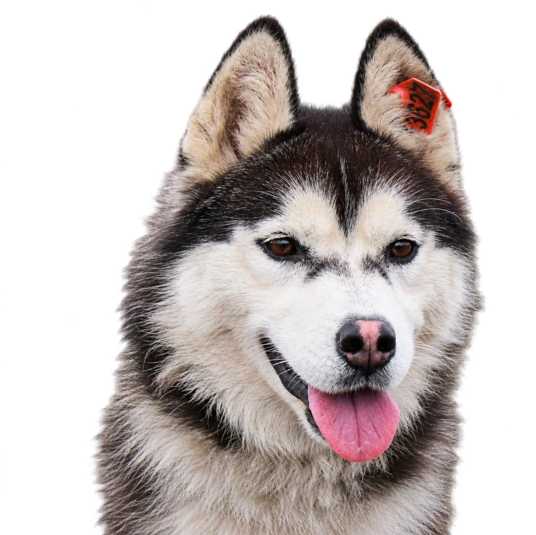

Прогулки с собаками
Приходите гулять
с собаками!Приходите
гулять с
собаками!
Каждую субботу помогаем собакам приюта привыкать к людям и готовиться к жизни в семье.Помогите собакам привыкнуть к людям и подготовиться к жизни в семье.
Каждую субботу · 13:00–15:00Суббота · 13:00–15:00

Когда
Каждую субботу с 13:00 до 15:00.
Приезжайте до 14:30.
Где
Омск, ул. 2-я Учхозная, 2А.
Муниципальный приют для животных.
Как попасть
Предварительная запись не нужна.
Участие бесплатное.
Ваше участие
Как вы можете помочь?
Прогулки — это важная часть социализации, а не просто возможность провести время с собаками.
- Гулять с собаками, которые уже уверенно ходят на поводке. Им нужны общение, внимание и регулярные прогулки.
- Помогать тревожным и пугливым собакам учиться доверять людям. Скажите работникам, что хотите помочь с социализацией: вам подскажут, кому это необходимо, и помогут начать.
Важно пониматьЭто помощь, а не развлечение
Прогулки — прежде всего помощь животным. Учитывайте особенности собак и соблюдайте правила приюта.
Подготовка
Что нужно знать перед посещением?Перед посещением
- Предварительная запись не нужна — просто приезжайте в часы прогулок.
- С детьми приходить можно. До 18 лет — только со взрослыми; они отвечают за безопасность ребёнка. Рекомендуемый возраст — от 6–7 лет.
- Одевайтесь по погоде: удобная одежда, которую не жалко испачкать, и непромокаемая обувь в сырую погоду.
Место и время
Где и когда проходят прогулки?
- Адрес: Омск, ул. 2-я Учхозная, 2А, муниципальный приют для животных.
- День и время: каждую субботу, с 13:00 до 15:00.
- Приехать можно с 13:00 до 14:30. Прогулки заканчиваются строго в 15:00.
Обязательно к прочтениюВажно
Правила безопасных прогулокПравила прогулок
Пожалуйста, прочитайте эти правила до посещения приюта.
Не кормить собак на прогулке!
Собак кормят заранее. Дополнительная еда может навредить, особенно животным на лечебной диете.
- Лакомства допускаются только с разрешения работников или ответственных волонтёров и только при социализации тревожных собак.
- Привезённый корм и лакомства оставляйте в тачке, у охранника или передавайте ответственным волонтёрам. Самостоятельно еду не распределяйте.
- Не приносите человеческую еду: сыр, хлеб, сладости, остатки блюд, жирные и солёные продукты, кости, сало.
- Запрещено кормить через сетку и бросать лакомства в вольеры.
На прогулке и на территорииНа территории приюта
- Не отпускайте собаку с поводка и соблюдайте дистанцию между животными.
- Не кричите, не применяйте силу, не бегайте и не навязывайте собаке физический контакт.
- Не просовывайте руки в вольеры и не гладьте незнакомых собак без разрешения.
- Не оставляйте мусор. Посещение приюта в состоянии опьянения запрещено.
- До 18 лет — только со взрослыми, ответственными за безопасность детей.
- О травмах, ухудшении самочувствия животных и других происшествиях сразу сообщайте работникам.
Спасибо за вашу помощь и заботу!Спасибо за заботу!
Для собак каждая прогулка — ещё один шаг к дому.Для вас это прогулка на свежем воздухе, для собак — маленький шаг к домашней жизни.